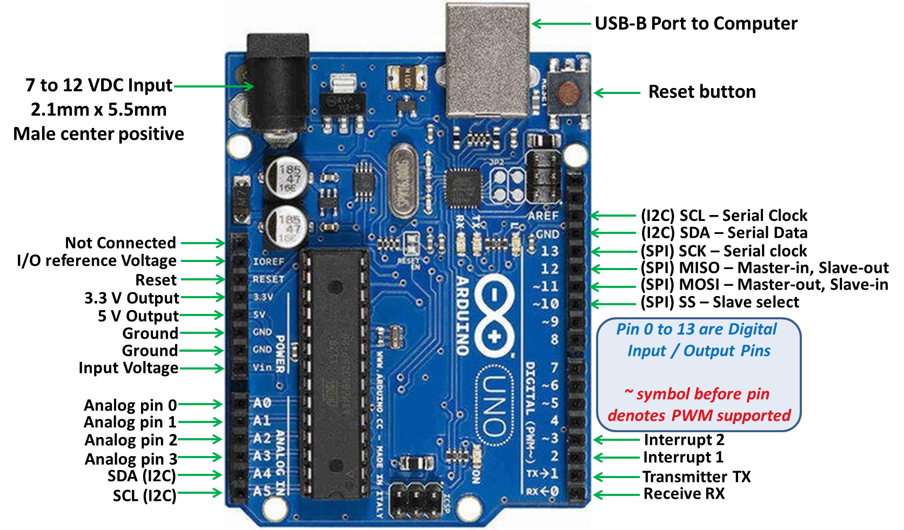
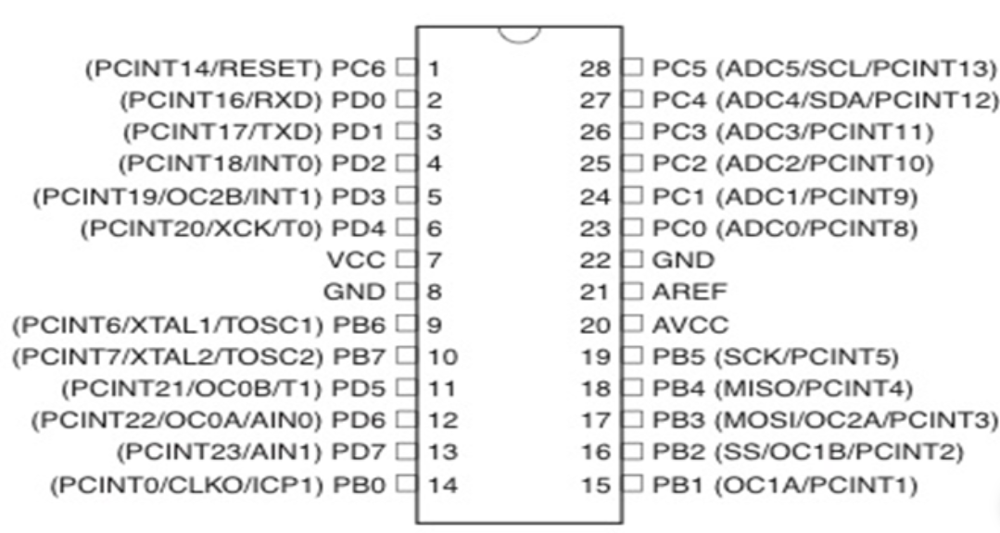

Bagian - Bagaian Utama Arduino
ARDUINO UNO
ARDUINO UNO
Mikrokontroler yang digunakan para peserta didik adalah mikrokontroler arduino. Arduino merupakan papan tunggal mikrokontroler serba guna yang dapat diprogram dan bersifat open-source. Tidak seperti kebanyakan papan sirkuit pemrograman sebelumnya, Arduino tidak lagi membutuhkan perangkat keras terpisah (disebut programmer atau downloader) untuk memuat atau meng-upload kode baru ke dalam mikrokontroler. Cukup dengan menggunakan kabel USB untuk mulai menggunakan Arduino
Selain itu, Arduino IDE menggunakan bahasa pemrograman C++ dengan versi yang telah disederhanakan, sehingga lebih mudah dalam belajar pemrograman. Arduino Uno merupakan versi terbaru dari keluarga Arduino, berbasis mikrokontroler ATmega328, menyempurnakan tipe sebelumnya, Duemilanove. Perbedaan Arduino tersebut adalah tidak menggunakan IC FTDI (Future Technology Devices International) USB to Serial sebagai driver komunikasi USB-nya tetapi menggunakan mikrokontroler ATmega8U2 yang diprogram sebagai konverter USB ke serial. Uno sendiri diambil dari bahasa Italia yang artinya 1 (satu)
board Arduino Uno dengan spesifikasi hardware sebagai berikut:
a) Microcontroller : ATmega328.
b) Tegangan Operasi : 5 V.
c) Tegangan Input : 7 – 12V.
d) Digital I/O : 14 pin.
e) PWM : 6 channel.
f) Analog Input : 6 channel.
g) Memory : 32KB Flash EEPROM (0,5 KB digunakan oleh bootloade 2KB SRAM dan 1KB EEPROM.
h) Frekuensi Clock : 16 MH

Bagian - Bagaian Utama Arduino
bagian – bagian utama yang terdapat didalam Arduino uno yaitu : terminal power supply, port usb, pin digital I/O, tombol reset, mikrokontroler ATmega328 dan pin analog input.
Sumber tegangan yang digunakan ada dua pilihan yaitu port USB dan power supply eksternal, port USB disambungkan ke laptop ataupun komputer dengan Arduino maka secara otomatis sumber tegangan dari port USB. Untuk sumber tegangan dari power supply eksternal, Arduino terhubung dengan sumber tegangan DC, tegangan yang direkomendasikan adalah 7V – 12V.
Pada arduino UNO terdapat 14 pin digital input – output 6 di antaranya PWM (Pulse Width Modulation) Output yang sering digunakan untuk kendali motor DC maupun motor servo, tabel 2.1 menunjukkan nomor dan fungsi pin pada Arduino uno.
Arduino memiliki 6 pin analog input , berfungsi membaca sinyal masukan analog seperti sensor analog. Pin analog input dapat digunakan untuk keperluan digital I/O. Tabel 2.2 menunjukkan nomor dan fungsi pin input analog.
Arsitektur Mikrokontroler ATMega328
ATMega328 merupakan mikrokontroler keluarga AVR 8 bit. Beberapa tipe mikrokontroler yang sama dengan ATMega328 ini antara lain ATMega 8535, ATMega 16 dan ATMega 32. Hal yang membedakan antara mikrokontroler ini antara lain adalah ukuran memori, banyaknya GPIO (Pin input/output), periperial (USART, timer, counter, dan lain – lain)
Dari segi ukuran fisik, ATMega328 memiliki ukuran fisik lebih kecil dibandingkan dengan beberapa mikrokontroler diatas, namun untuk segi memori dan periperial lainnya ATMega 328 tidak kalah dengan yang lainnya karena ukuran memori dan periperial-nya relatif sama dengan ATMege8535,
ATMega328 memiliki 3 buah port utama yaitu PORTB, PORTC dan PORTD dengan total pin input/output sebanyak 23 pin. Port tersebut dapat difungsikan sebagai input / output digital atau difungsikan sebagai periperial lainnya. Berikut Gambar konfigurasi pin ATMega328 :
ATMega memiliki 3 buah port utama yaitu port B , Port C, Port D dengan total pin input/output sebanyak 23 pin, port tersebut digunakan sebagai input/ouput digital atau difungsikan sebagai periperial yang lainnya.
Port B merupakan jalur data 8 bit yang dapat difungsikan sebagai input/output. Selain itu. Port B memiliki fungsi alternatif yaitu
1) ICPI (PB0) berfungsi sebagai timer counter 1 input capture pin.
2) OC1A (PB1), OC1B (PB2) dan OC2 (PB3) dapat difungsikan sebagai keluaran PWM (Pulse Width Modulation)
3) MOSI (PB3), MISO (PB4), SCK (PB5), SS (PB2) merupakan jalur komunikasi SPI
4) TOSC1 (PB6) dan TOSC (PB7) dapat difungsikan sebagai sumber clock external untuk timer.
5) XTALI (PB6) dan XTAL2 (PB7) merupakan sumber clock utama mikrokontroler

Port C merupakan jalur data 7 bit yang dapat di fungsikan sebagai input/output digital, fungsi alternatif , antara lain :
1) ADC6 channel (PC0, PC1, PC2 ,PC3 PC4, PC5) dengan resolusi sebesar 10 bit. ADC dapat kita gunakan untuk mengubah input yang merupakan tegangan analog menjadi data digital.
2) 12C (SDA dan SDL) merupakan salah satu fitur yang terdapat pada PORT C. 12 C digunakan untuk komunikasi dengan sensor atau device lain yang memiliki komunikasi data tipe 12C seperti sensor kompas, accelerometer nunchuck.

Port D merupakan jalur data 8 bit yang masing – masing pinnya juga dapat difungsikan sebagai input / output, port D juga memiliki fungsi alternatif. Antara lain.
1) USART (TXD dan RXD) merupakan jalur data komunikasi serial dengan level sinyal TTL. Pin TXD berfungsi untuk mengirimkan data serial, adapun RXD kebalikannya, yaitu sebagai pin yang berfungsi untuk menerima data serial.
2) Interrupt (INT0 dan INT1) merupakan pindengan fungsi khusus sebagai interupsi hardware. Interupsi biasanya digunakan sebagai selaan dari program, misalkan pada saat program berjalan kemudian terjadi interupsi hardware/software, maka program utama akan berhenti dan akan menjalankan program interupsi.
3) XCK dapat difungsikan sebagai sumber clock eksternal unutk USART, namun kita juga dapat memanfaatkan clock dari CPU, sehingga tidak perlu membutuhkan eksternal clock
4) T0 dan T1 berfungsi sebagai masukan counter eksternal untuk timer 1 dan timer 0.
5) AIN0 dan AIN1 keduanya merupakan masukan input untuk analog comporator
FITUR YANG TERDAPAT DALAM ATMEGA328
1) 130 macam instruksi yang hampir semuanya diesksekusi dalam satu siklus clock.
2) 32 x 8 bit register serbaguna
3) Kecepatan mencapai 16 MIPS dengan clock 16 MHZ.
4) 32 KB flash memory dan pada arduino memiliki bootloader yang menggunakan 2KB dari flash memory sebagai bootloader.
5) Memliki EEPROM (Electrically Erasable Programmable Read Only Memory) sebesar 1 KB sebagai tempat penyimpanan data semipermanen karena EEPROM tetap dapat menyimpan data meskipun catu daya dimatikan.
6) Memiliki SRAM (Static Random Access Memory) sebesar 2KB.
6) Memiliki SRAM (Static Random Access Memory) sebesar 2KB.
8) Master/slave SPI serial interface.
Gambar Diagram Blok ATMega328 ((Aru Tirto Prihono, S. Sn, 2019 : 111)